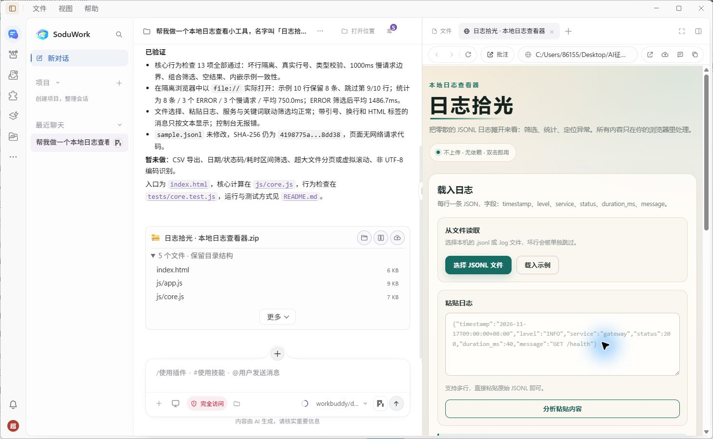
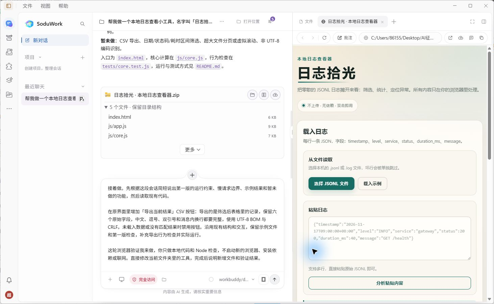

SoduWork 有个很实用的切换：Pi 聊到一半，可以把 Agent 换成 OpenCode，接着原来的工作区往下写。平时我写小工具常遇到这种情况：先聊需求、出个能用的版本，后面又想换个 Agent 补功能。真要搬一次目录、解释一遍文件结构，兴致就没了。
这次我拿一个纯前端日志工具做了实测。全程用同一个模型 workbuddy/deepseek-v4.1-flash，先让 Pi 写「日志拾光」，再换 OpenCode 加 CSV 导出。最后工具确实能跑，Pi 留下的 13 项测试也没被弄坏，OpenCode 补到了 17 项。
但过程没有宣传词里那么顺：OpenCode 中途卡住了，CSV 代码落盘后，Agent 也没有正常交卷。下面把做成的东西、切换过程和这次失败都放出来。本文的代码与运行记录来自我自己的测试环境，没有额外对比其他模型。
我给的需求很普通：不用安装环境，打开 HTML 就能看 JSONL 日志。按级别、服务和关键词筛选，把错误和慢请求标出来，统计条数和平均耗时。页面里附一份样例，方便直接点着看效果。

Pi 在指定的 app 文件夹里写了 8 个文件，交付说明列出 13 项测试通过。它的结构挺清爽，HTML、样式和脚本分开，解析与筛选放在 core.js，界面事件放在 app.js。样例里还放了一行坏 JSON 和一条耗时格式错误的记录，正好检查它会不会把异常数据硬塞进统计。

切换界面上可以选 OpenCode，工作区还是 app。模型没换，这样不用把后续差异解释成换了个更聪明的模型。
随后我只追加了一条要求：
继续完成 CSV 导出。先读取当前代码，在现有筛选结果上加导出，保留原来的功能和测试。
OpenCode 没有重做页面，直接在现有按钮区加了「导出当前结果」。core.js 里新增 toCsv(records)，固定六列：时间、级别、服务、状态码、耗时和消息。这个函数接收的是筛选后的数组，所以导出内容与页面看到的行一致。
界面这边的关键逻辑只有几行：
function exportCsv() {
if (!state.loaded || state.filtered.length === 0) return;
const blob = new Blob([core.toCsv(state.filtered)], {
type: 'text/csv;charset=utf-8'
});
const url = URL.createObjectURL(blob);
const link = document.createElement('a');
link.href = url;
link.download = exportFileName();
link.click();
link.remove();
els.exportNote.textContent = '已导出 ' + state.filtered.length + ' 条记录';
}它的转义处理不是简单 join(',')：遇到逗号、引号或换行时，将单元格放进双引号，内部双引号翻倍。文件开头加 UTF-8 BOM，行尾用 CRLF，Excel 打开中文不容易乱码。空结果时禁用按钮。
我重新跑了测试，17 项全过，其中新增 4 项覆盖 BOM、列序、特殊字符、筛选导出和空结果。接着在 Chrome 里实际点了一遍：样例解析出 8 条有效记录、3 条 ERROR、3 条慢请求，平均耗时 750 ms；筛到 ERROR + gateway + reset 后，页面只剩 1 条，下载的 CSV 也只有这 1 条，多行消息仍是一个完整单元格。

第一次切换后，OpenCode 一直读文件、复述计划，没有写完功能。界面显示模型请求失败，但原始日志里的错误是 Permission channel is unavailable; operation was not approved，不能把它笼统记成模型不行。
停止、重启后又遇到权限重新确认。我保留原来的会话、工作区和代码，用一句「继续完成上一条 CSV 导出任务」再发了一次。这次代码和测试确实落了盘，但运行记录最终停在 interrupted，错误是 Access session interrupted by Runner restart; confirm permissions to resume。所以上文的 17 项测试和浏览器验收是我独立做的，不是拿 Agent 的「已完成」当验收。
另外，当前这个聊天使用了 chat- 加 UUID 的任务 ID，共 41 个字符；Runner 事件接收端限制为 36 个字符，日志持续出现 DELIVERY_INVALID。它会影响运行状态回传，不能据此断言每一步代码失败都是它造成的。我没有改产品源码，只把失败现场、日志和截图保存下来。
这次实测我最喜欢的是切换时不用搬项目：Pi 的文件、OpenCode 的修改和追加测试都在同一个目录里，衔接很自然。需要改进的是中断后的恢复提示，让用户知道去哪重新确认、原会话能否继续，而不是只看到一个转圈或宽泛的模型错误。
如果你也常先搭原型、再补导出或报表，可以试这条接力方式。首版验收留一份，追加需求只写增量，换底座后先读旧测试再动手，会省不少解释成本。本文数据和验证材料在实测仓库。
实测环境与代码：GitHub 仓库